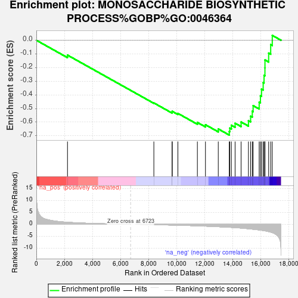
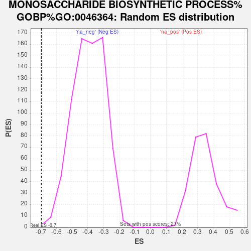

| Dataset | gene_ranks |
| Phenotype | NoPhenotypeAvailable |
| Upregulated in class | na_neg |
| GeneSet | MONOSACCHARIDE BIOSYNTHETIC PROCESS%GOBP%GO:0046364 |
| Enrichment Score (ES) | -0.6949878 |
| Normalized Enrichment Score (NES) | -1.7656664 |
| Nominal p-value | 0.0013623978 |
| FDR q-value | 0.5024883 |
| FWER p-Value | 0.755 |

| SYMBOL | RANK IN GENE LIST | RANK METRIC SCORE | RUNNING ES | CORE ENRICHMENT | |
|---|---|---|---|---|---|
| 1 | PFKFB2 | 2223 | 0.868 | -0.1089 | No |
| 2 | G6PC3 | 8386 | -0.138 | -0.4593 | No |
| 3 | CRTC2 | 9692 | -0.315 | -0.5274 | No |
| 4 | PFKFB4 | 9694 | -0.315 | -0.5207 | No |
| 5 | PPARGC1A | 10102 | -0.376 | -0.5360 | No |
| 6 | PCK2 | 11493 | -0.622 | -0.6023 | No |
| 7 | SORD | 12069 | -0.756 | -0.6191 | No |
| 8 | PGK1 | 12984 | -1.000 | -0.6500 | No |
| 9 | ATF4 | 13769 | -1.234 | -0.6685 | Yes |
| 10 | G6PD | 13807 | -1.247 | -0.6438 | Yes |
| 11 | PGAM2 | 13918 | -1.282 | -0.6226 | Yes |
| 12 | PER2 | 14185 | -1.379 | -0.6083 | Yes |
| 13 | PGAM1 | 14613 | -1.570 | -0.5991 | Yes |
| 14 | ENO1 | 15138 | -1.847 | -0.5895 | Yes |
| 15 | PGM1 | 15292 | -1.943 | -0.5565 | Yes |
| 16 | PC | 15412 | -2.017 | -0.5200 | Yes |
| 17 | CRY1 | 15471 | -2.059 | -0.4791 | Yes |
| 18 | SLC37A4 | 15903 | -2.337 | -0.4537 | Yes |
| 19 | SLC39A14 | 15992 | -2.406 | -0.4071 | Yes |
| 20 | ENO3 | 16071 | -2.475 | -0.3584 | Yes |
| 21 | PFKFB3 | 16189 | -2.584 | -0.3096 | Yes |
| 22 | TPI1 | 16251 | -2.630 | -0.2566 | Yes |
| 23 | ENO2 | 16315 | -2.700 | -0.2023 | Yes |
| 24 | RBP4 | 16317 | -2.702 | -0.1443 | Yes |
| 25 | AKR1B1 | 16580 | -3.040 | -0.0940 | Yes |
| 26 | SLC25A10 | 16726 | -3.269 | -0.0322 | Yes |
| 27 | GPI | 16838 | -3.459 | 0.0357 | Yes |
